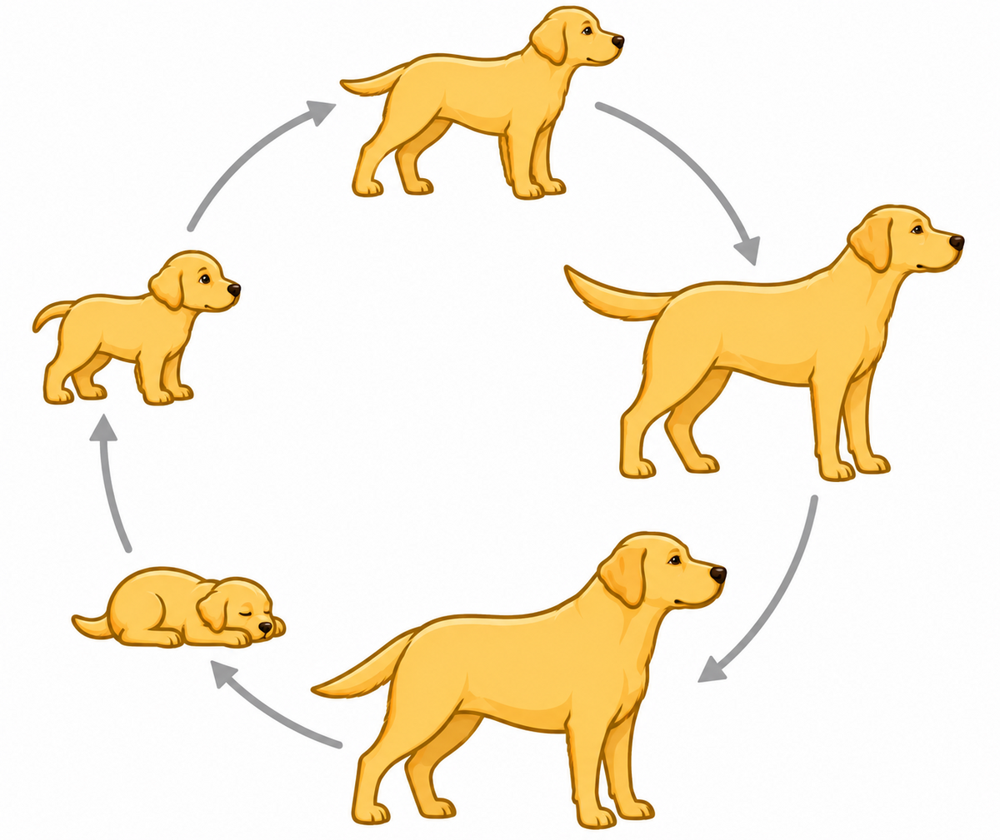

Newborn Puppy
Birth to 4 weeks
A newborn puppy depends on its mother for food and warmth. Its senses begin developing during this stage.
From Puppyhood to Adulthood
Dogs go through several stages as they grow. At each stage, they learn new skills and become more independent.

A dog begins life as a small puppy that depends on its mother. During the first few weeks, the puppy begins opening its eyes, walking, playing, and exploring its surroundings.
Dogs do not all grow at the same speed. Small breeds may become adults sooner, while large breeds may continue growing for a longer time.
The Growing Years
The ages are estimates because every dog grows at a different speed.
Birth to 4 weeks
A newborn puppy depends on its mother for food and warmth. Its senses begin developing during this stage.
4 to 8 weeks
The puppy starts walking, playing, and learning from its mother and the other puppies.
8 to 12 weeks
The puppy becomes interested in people, new places, and other animals. Positive experiences help build confidence.
3 to 6 months
The dog becomes more curious and independent. This is an important time for training and social development.
6 to 18 months
The dog continues growing and becomes more mature. Some larger breeds may take longer to reach adulthood.
Healthy Development
A growing dog needs food that matches its age, size, and health needs. It should also have clean water every day.
Training helps a dog learn good behavior. Play and exercise help the dog's body and mind stay active.
Regular checkups and vaccinations help protect a dog as it grows from a puppy into an adult.
Continue Learning
Every stage helps prepare a puppy for adult life. Learn more about how puppies change during their first months of development.